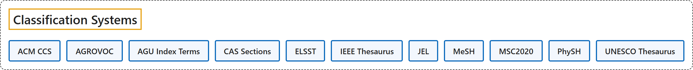

4. Classification Systems
Classification

Glossary
| Term | Definition | 中文翻译 | Source |
|---|---|---|---|
| Classification Systems 分类体系 |
(context) "a system for naming and organizing things, especially plants and animals, into groups that share similar qualities" | （语境）一种给事物命名并加以组织的体系，尤其用于植物和动物，把它们分成具有相似特性的组 | Cambridge University Press & Assessment, n.d., "taxonomy" noun |
| ACM CCS ACM 计算分类系统 |
"The 2012 ACM Computing Classification System has been developed as a poly-hierarchical ontology that can be utilized in semantic web applications. It replaces the traditional 1998 version of the ACM Computing Classification System (CCS), which has served as the de facto standard classification system for the computing field." | 2012 ACM 计算分类系统被开发成一个多层级的本体，可以用于语义网应用。它取代了传统的 1998 版 ACM 计算分类系统（CCS），后者一直是计算领域事实上的标准分类系统。 | Association for Computing Machinery, 2012, para. 1 |
| AGROVOC AGROVOC（联合国粮农组织农业叙词表） |
"AGROVOC is a relevant Linked Open Data set about agriculture available for public use and facilitates access and visibility of data across domains and languages." | AGROVOC 是一个可供公众使用的关于农业的关联开放数据集，有助于数据跨领域、跨语言的访问和可见性。 | Food and Agriculture Organization of the United Nations, n.d., para. 1 |
| AGU Index Terms AGU 索引词 |
(context) "Choose the most appropriate index terms for your paper." | （语境）选择最合适的索引词，用于你的论文。 | American Geophysical Union, n.d., para. 1 |
| CAS Sections CA 类目（《化学文摘》分类） |
"You will find that CAS information is divided into 80 different sections. Each CA section covers only one broad area of scientific inquiry." | 你会发现，CAS 信息被划分为 80 个不同的类目。每个 CA 类目只涵盖一个宽泛的科学研究领域。 | Chemical Abstracts Service, n.d., 1 and list item 1 |
| ELSST ELSST（欧洲语言社会科学叙词表） |
"The European Language Social Science Thesaurus (ELSST) is a broad-based, multilingual thesaurus for the social sciences." | 欧洲语言社会科学叙词表（ELSST）是一套面向社会科学的覆盖面广的多语种叙词表。 | Consortium of European Social Science Data Archives, n.d., para. 1 |
| IEEE Thesaurus IEEE 叙词表 |
"The IEEE Thesaurus is a controlled vocabulary of about 12,770 descriptive engineering, technical, and scientific terms as well as IEEE-specific society terms." | IEEE 叙词表是一套受控词表，收录约 12,770 个描述性的工程、技术和科学术语，以及 IEEE 各学会特有的术语。 | Institute of Electrical and Electronics Engineers, n.d., "General information on the IEEE Thesaurus" section, para. 1 |
| JEL JEL 分类体系 |
"The JEL classification system was developed for use in the Journal of Economic Literature (JEL), and is a standard method of classifying scholarly literature in the field of economics." | JEL 分类体系是为《经济文献杂志》（JEL）而开发的，是在经济学领域中对学术文献进行分类的一种标准方法。 | American Economic Association, n.d., para. 1 |
| MeSH 医学主题词表（MeSH） |
"The Medical Subject Headings (MeSH) thesaurus is a controlled and hierarchically-organized vocabulary produced by the National Library of Medicine. It is used for indexing, cataloging, and searching of biomedical and health-related information." | 医学主题词表（MeSH）叙词表是美国国家医学图书馆编制的一套受控且分层组织的词表。它用于对生物医学和健康相关信息进行标引、编目和检索。 | National Library of Medicine, n.d., para. 1 |
| MSC2020 MSC2020（数学学科分类 2020） |
"Mathematical Reviews (MR) and zbMATH collaborate on maintaining the Mathematics Subject Classification, which is used by these reviewing services, publishers, funding agencies, and others to categorize items in the mathematical sciences literature. It is a taxonomy created by and for mathematical researchers." | Mathematical Reviews（MR）和 zbMATH 共同维护数学学科分类，这些评论服务、出版社、资助机构等用它来给数学科学文献分类。它是由数学研究者创建、为数学研究者服务的分类体系。 | Associate Editors of Mathematical Reviews and zbMATH, 2020, para. 2 |
| PhySH PhySH（物理学主题词表） |
"PhySH (Physics Subject Headings) is a physics classification scheme developed by the American Physical Society (APS) to organize journal, meeting, and other content by topic." | PhySH（物理学主题词表）是美国物理学会（APS）开发的一种物理学分类方案，用于按主题组织期刊、会议及其他内容。 | American Physical Society, n.d., para. 1 |
| UNESCO Thesaurus UNESCO 叙词表 |
"The UNESCO Thesaurus is a controlled and structured list of concepts used in subject analysis and retrieval of documents and publications in the fields of education, culture, natural sciences, social and human sciences, communication and information." | UNESCO 叙词表是一份受控的、结构化的概念列表，用于教育、文化、自然科学、社会与人文科学、传播与信息等领域文献和出版物的主题分析与检索。 | UNESCO, n.d., para. 1 |
References
American Economic Association. (n.d.). JEL classification system / EconLit subject descriptors. Retrieved October 27, 2026, from https://www.aeaweb.org/econlit/jelCodes.php
American Geophysical Union. (n.d.). Index terms. Retrieved October 27, 2026, from https://www.agu.org/publications/authors/journals/index-terms
American Physical Society. (n.d.). About PhySH. Retrieved October 27, 2026, from https://physh.org/about
Associate Editors of Mathematical Reviews and zbMATH. (2020). Mathematics Subject Classification 2020 (MSC2020). Retrieved October 27, 2026, from https://msc2020.org/
Association for Computing Machinery. (2012). The 2012 ACM Computing Classification System. Retrieved October 27, 2026, from https://www.acm.org/publications/class-2012
Cambridge University Press & Assessment. (n.d.). Taxonomy. In Cambridge Dictionary. Retrieved October 27, 2026, from https://dictionary.cambridge.org/dictionary/english/taxonomy
Chemical Abstracts Service. (n.d.). The sections of CA. Retrieved October 27, 2026, from https://www.cas.org/training/documentation/references/ca-sections
Consortium of European Social Science Data Archives. (n.d.). About ELSST. Retrieved October 27, 2026, from https://elsst.cessda.eu/about/
Food and Agriculture Organization of the United Nations. (n.d.). AGROVOC. Retrieved October 27, 2026, from https://www.fao.org/agrovoc/
Institute of Electrical and Electronics Engineers. (n.d.). IEEE Thesaurus. Retrieved October 27, 2026, from https://www.ieee.org/publications/services/thesaurus
National Library of Medicine. (n.d.). Welcome to Medical Subject Headings. Retrieved October 27, 2026, from https://www.nlm.nih.gov/mesh/meshhome.html
UNESCO. (n.d.). About the UNESCO Thesaurus. Retrieved October 27, 2026, from https://vocabularies.unesco.org/en/about